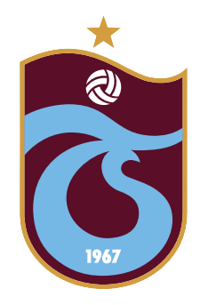

Başarılarımız
Lig Şampiyonlukları
8 kez Türkiye Süper Lig Şampiyonluğu
1975-76 1976-77 1978-79 1979-80 1980-81 1983-84 2010-11 2021-22
Türkiye Kupası
9 kez Türkiye Kupası Şampiyonluğu
1976-77 1977-78 1983-84 1991-92 1994-95 2002-03 2003-04 2009-10 2019-20
Süper Kupa
3 kez TFF Süper Kupa Şampiyonluğu
2009-10 2019-2020 2021-2022
Cumhurbaşkanlığı Kupası
7 kez Cumhurbaşkanlığı Kupası Şampiyonluğu
1975-76 1976-77 1977-78 1978-79 1979-80 1982-83 1994-95
Başbakanlık Kupası
5 kez Başbakanlık Kupası Şampiyonluğu
1975-76 1977-78 1984-85 1993-94 1995-96
Kıbrıs Barış Kupası Şampiyonluğu
1974-75
